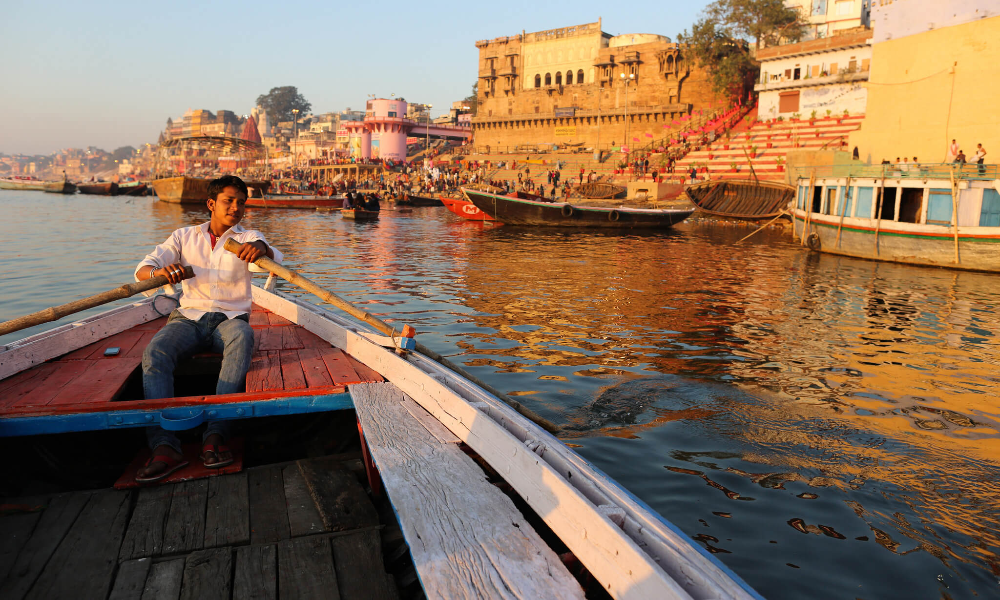
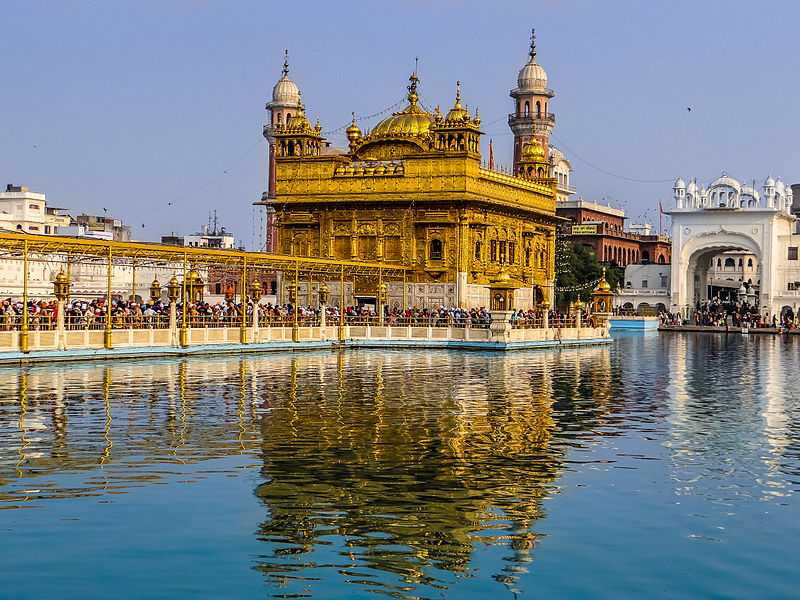
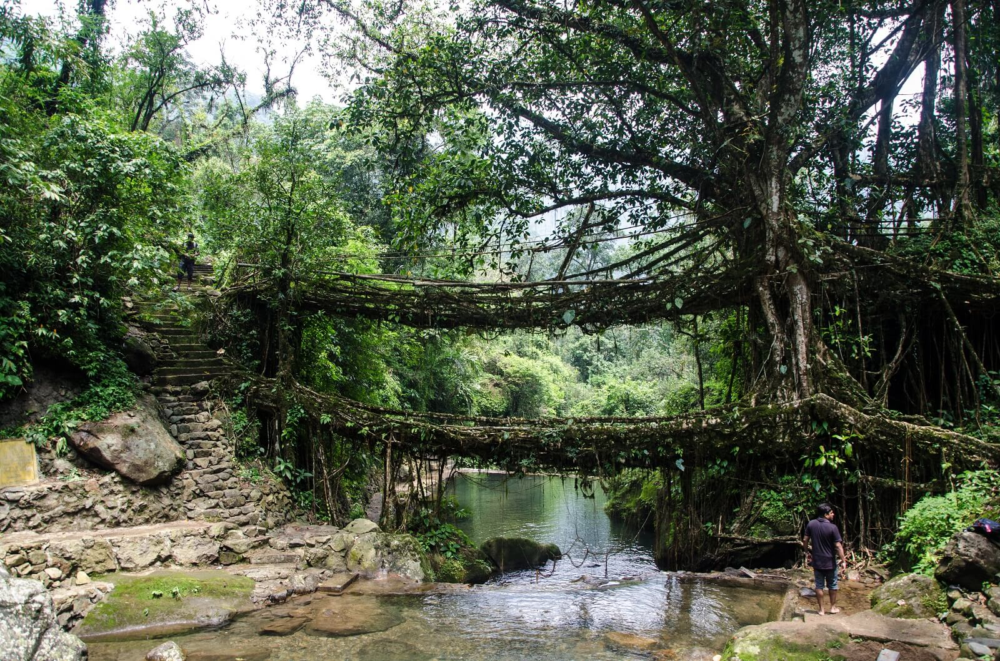

1. One Of The Oldest Inhabited City Is Still Thriving.
Humans started civilization thousands of years ago and initially, they started small communities at certain regions, which then became ruins or archeological excavation points. However, certain cities of these early civilizations still thrive and one such city is Varanasi or Benaras. Thriving for more than three thousand years, this city is assumed to be built by Lord Shiva, himself. It is located on the banks of Holy River Ganges.
2. Most Visited Place in the World, the Golden Temple in Amritsar
Awarded by the World Book of Records, the Golden Temple of Amritsar is the most visited place in the world with over one lakh devotees flocking at the shrine every single day.
3. Mawsynram is the Wettest Place on Earth with 11,873 Millimetres of Rain Annually
The eastern part of the country holds the world’s wettest place, which is inhabited. Meghalaya holds Mawsynram village, which receives 467 inches of rainfall, every year. Can you guess where the second wettest inhabited region is located? Well, it is again India. Cherrapunji village holds the second position. This ecosystem helps the region to have lush natural beauties, exotic plant species and much more. If you are looking for a green vacation, away from commercialization, this is the best place.
4. Living Bridges
As stated before, Meghalaya has a unique eco system because of the heavy rainfall, throughout the year. The locals live a secluded life; keep them away from the modernity, to safeguard their culture. This led to unique attractions in these regions, including living bridges. The double-decker living bridge is an important tourist attraction. However, the state is covered with numerous living bridges, made with live vines and roots trained for many years to grow across canyons. It is much durable than wooden bridges, as wood would rot in the wet climate easily.
5. Taj Mahal was built to honor the favorite wife of Shah Jahan
Many of the world’s most famous buildings have been dedicated to the leaders such as Kings and Pharaohs or the Gods. But not the Taj Mahal, it was built to honor the Mogul Emperor’s beloved wife Mumtaz, who died during childbirth. Shah Jahan had many wives, which are also buried in the same complex, but it was Mumtaz who was his favorite wife. So there is a romantic and tragic story behind the construction, which has been named as one of the most romantic gestures in history.